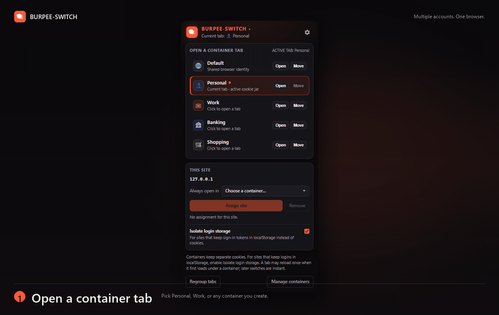

Multiple accounts.
One browser.
Keep work, personal, and client logins open side by side. BURPEE-SWITCH gives every tab its own container, cookies, and visual label — without separate browser profiles.

Built for switching.
Simple on the surface. Isolated cookies and optional login-storage separation underneath.
Separate accounts
Use the same site as different users in one window. Each tab keeps its container identity.
Separate cookies
Every container has its own saved session. Switching tabs restores the right cookie jar.
Login-storage isolation
For sites that keep tokens in localStorage, enable one toggle and sign in once per container.
Instant switching
Already-loaded tabs switch without a page reload. A tab may reload once on its first container load.
Visual labels
Colored dots, tab titles, optional tab groups, and a page edge make the active container obvious.
Burp ready
Optional request headers tag proxy traffic by container. The highlighter JAR colors Burp history rows.
Three steps.
No profile juggling. No second browser. Just pick a container and sign in.
Open a container
Click the toolbar icon, then Open next to Personal, Work, or a container you create.
Sign in once
Log in to the site in that tab. Repeat in another container with your second account.
Switch tabs
Each tab keeps its own account. Use Move when a tab belongs in another container.
Install unpacked.
BURPEE-SWITCH is distributed as source. Clone it, load it in developer mode, and pin it to the toolbar.
- Open
chrome://extensions(orbrave://extensions,edge://extensions). - Turn on Developer mode.
- Click Load unpacked and select the project folder.
- Pin BURPEE-SWITCH to the toolbar.
# Clone the repository git clone https://github.com/alielbadry/burpee-switch.git # Then load the folder as an unpacked extension cd burpee-switch
Using Burp Suite?
Enable Burp Suite headers in the options page to tag requests with the container name, color, and tab ID. Load the highlighter JAR to color Proxy history rows automatically.